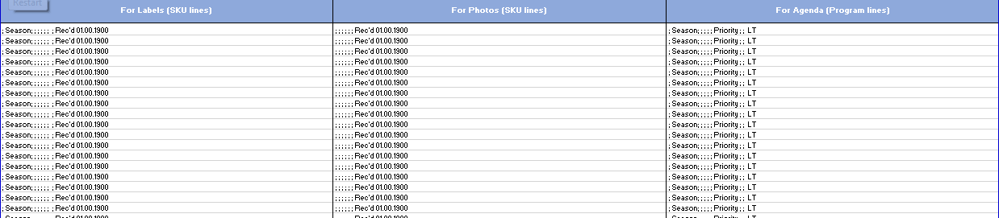
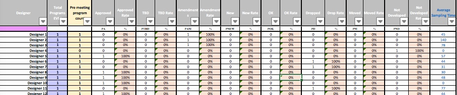

The 'By Vendor' data tab shows statistics broken out by each Vendor.

Summary: This file tracks the lifecycle of design development programs, and their corresponding styles. Through status codes noted by the user at each stage, the data tabs pull useful statistics that show a summary of the category, and of the department as a whole. Statistics gathered show if there are trends that need to be examined, and more generally if the season is on track to reach adoption rate goals set by previous seasons.
The WIP Tab is where all data is entered by the user. White lines are the header lines for each program, and each colored line below it represents an actual, physical sample within that program.
Click here for more information about the WIP tab and information it needs and gathers.
This tab takes information from the WIP Tab to concatenate three types of labels-- one for printed paper labels, one for naming photos, and the last for creating agenda items. This can be done manually by filtering and pasting from the WIP tab, or this can be done automatically by running the appropriate Macros.
This tab takes data fromt the WIP tab and reorders it for use in the 'Working Schedule & Estimates' file, and the 'Results' file as needed. Data is taken on the Program level, to summarize in partner documents. Data can be filtered and pulled manually from the WIP tab, or can be done automatically by running the appropriate Macros.
All Data Tabs show statitistical information broken down by Program level on the left side, and by Style level on the right side.
By Program:
By Style:
Data shown by Style can be expanded into more detailed breakdowns, showing 'reason codes':
New Sample and New Add reason codes:
Amendment reason codes:
Drop reason codes:
The 'By Class' data tab shows statistics broken out by Class Category.
The 'By Vendor' data tab shows statistics broken out by each Vendor.
The 'By Designer, Theme' data tab shows statistics broken out by each designer, and below by theme, and room.
The 'Stage and Time' data tab shows statistics broken out by sampling stage, by Class Category, and below by Vendor. This details how many initial samples were approved, amended, dropped, etc., as well as the average sampling time.
This tab is a reference for all Codes, and is the source of the drop-down-list options needed on the WIP tab. The Code Key also shows an explaination of each status code that can be used on the Program level, or Style level.